Set up your own Cozi connector for Claude
This guide sets up a small server that lets Claude read and update your Cozi lists and calendar. You need it if you use Claude on the web, in the phone apps or through an agent, because those can only reach a server on the internet. It works in Claude Desktop too, so one setup covers every place you use Claude. If you only use Claude Desktop, the MCPB install is simpler.
Your server runs in your own free Cloudflare account, which you own and are responsible for. This project doesn't host it and has no access to your account. You don't need a terminal, a domain or a credit card, and only your Cozi account can sign in to it.
This is an unofficial, open-source project. Cozi doesn't make, recognize or endorse it, and neither does Cloudflare. You can run it free on other hosts too. This guide uses Cloudflare because it's relatively simple to set up.
This works with Claude only. ChatGPT lets custom connectors change data only on its Business, Enterprise and Edu plans.
Choose how to install
What you'll need
- A free Cloudflare account. It runs your server. If you can, use one that runs nothing else, because the update token in step 5 can change any Worker in the account.
- A free GitHub account. Cloudflare copies the setup into a new repository there and builds your server from it.
- Two-factor sign-in turned on for both accounts.
- Your Cozi email and password. Your server stores the password encrypted, so a password you don't use anywhere else is a good idea.
The red boxes in the pictures show what to click or fill in. Names like your-subdomain stand in for your own.
Step 1: Start the deploy
Click the button. It opens Cloudflare in a new tab, so you can keep this guide open. Sign in to Cloudflare. If your login has more than one Cloudflare account, choose the one you want to use. That account decides your server's address, and you'll need it again in step 5.
Step 2: Connect GitHub
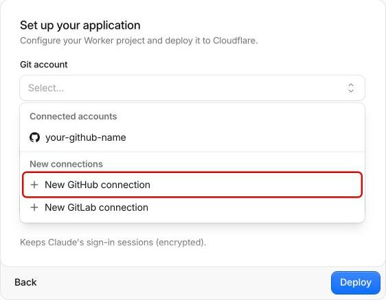
Open Git account and choose New GitHub connection. If your GitHub name is already listed, choose that instead.
If GitHub asks which repositories Cloudflare may use, choose Only select repositories. Cloudflare only needs the new one it's about to create.
Cloudflare's button can't build straight from the public cozi_mcp project. It always copies the setup files into a new repository in your own GitHub account and builds from that copy. The copy holds only those few files, and your server gets its updates from cozi_mcp's releases, not from the copy.
Step 3: Make the repository private
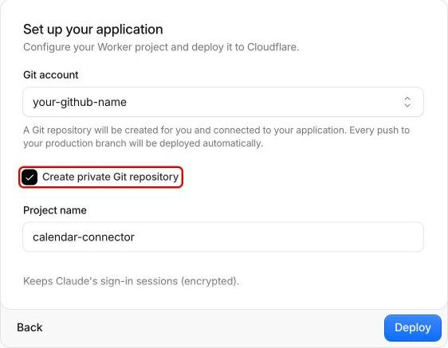
- Tick Create private Git repository. It starts unticked. Nothing secret goes in the repository, but nobody else needs to see it.
- Leave Project name as
calendar-connector. It becomes part of your server's address. It only has to be unique inside your own GitHub and Cloudflare accounts, so it doesn't matter if other people use the same name. If you already have a repository or Worker calledcalendar-connector, choose another name and use it wherever this guide sayscalendar-connector. Leave "cozi" out of any name you choose, because Cloudflare's terms don't allow other companies' names in these addresses.
Step 4: Leave the storage as it is
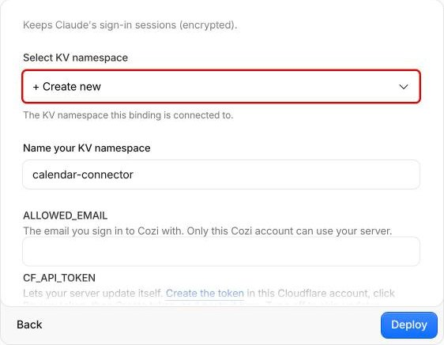
Leave Create new selected and the name as calendar-connector. This is where your server keeps Claude's sign-in sessions, encrypted.
Step 5: Enter your email and the update token
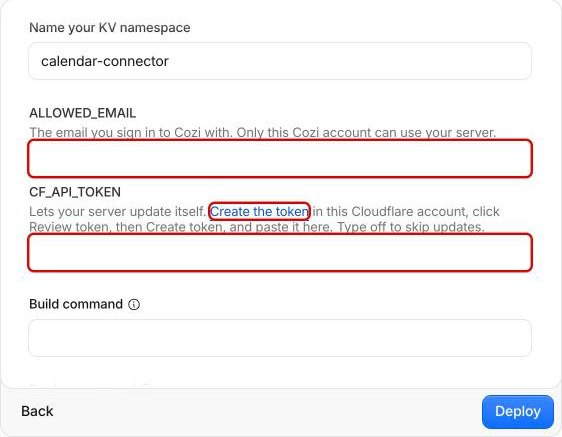
ALLOWED_EMAIL: type the email you sign in to Cozi with. Your server turns away any other email before it contacts Cozi.
CF_API_TOKEN: this lets your server install updates by itself. It's a Cloudflare token, not a GitHub one. Your server reads new releases from GitHub without any account. It needs the token for the last step, because only Cloudflare can change the code a server runs, and it needs your permission to replace its own.
To create the token:
- Click Create the token. It opens in a new tab. If Cloudflare asks which account, choose the same one as in step 1.
- The name and permission are already filled in, so don't change anything. Scroll to the bottom and click Review token.
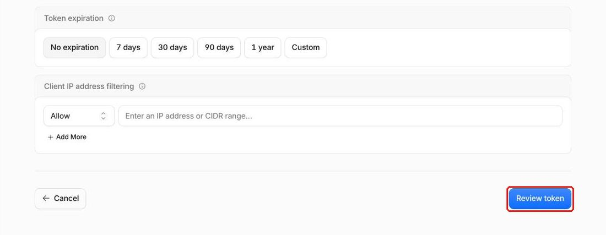
- Click Create token.
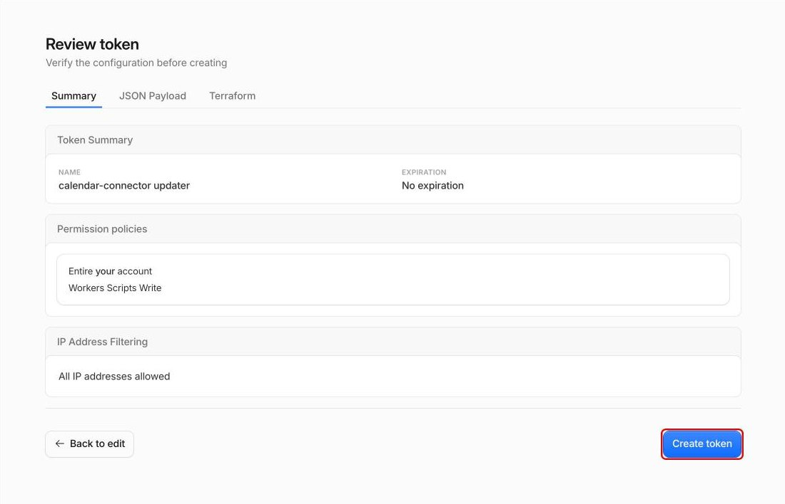
- Copy the token, because Cloudflare only shows it once. Paste it into
CF_API_TOKEN.
To skip automatic updates, type off instead. Your server works the same, but it stays on this version until you add a token.
Step 6: Click Deploy
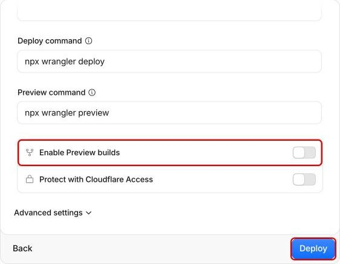
Turn off Enable Preview builds, then leave everything else as it is:
| Setting | Leave it | Why |
|---|---|---|
| Build command | Empty | There's nothing to build first. |
| Deploy command and Preview command | As filled in | Cloudflare's defaults are correct. |
| Enable Preview builds | Turn off | It would build a separate public copy of your server whenever something changes another branch of the repository. You don't need one. |
| Protect with Cloudflare Access | Off | It would block Claude from reaching your server. |
| Advanced settings | Closed | Nothing in there is needed. |
Click Deploy and wait for the build to finish.
Step 7: Open your server
In Cloudflare, open Workers & Pages, click calendar-connector, then click Visit.
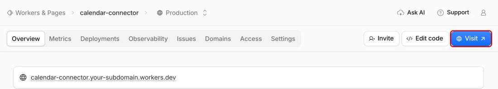
Your server's address looks like https://calendar-connector.your-subdomain.workers.dev. Every Worker in a Cloudflare account shares the same subdomain, so yours may look unrelated to this project. That's normal.
This first visit also tells your server its own name, which it needs before it can update itself.
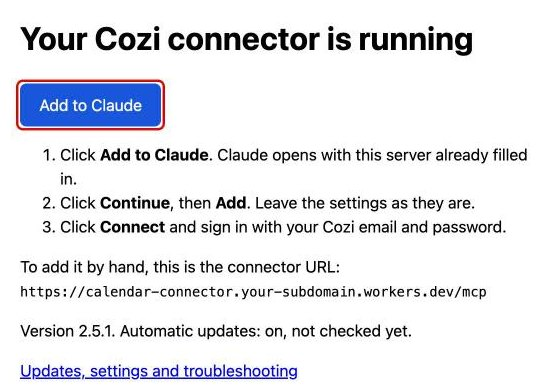
Step 8: Add it to Claude
- Click Add to Claude on your server's page, and sign in to Claude if asked.
- Claude warns you because the link came from outside Claude. Check that the address is your server's, then click Continue.
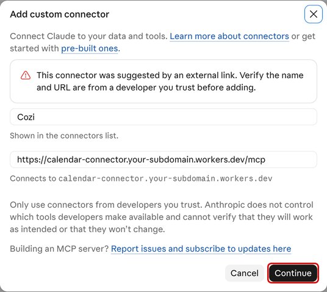
- Leave the settings as they are. Claude has already detected the right ones: Sign in now sends you to your server's sign-in page, and Use Claude's published identity is the only kind of connection your server accepts.
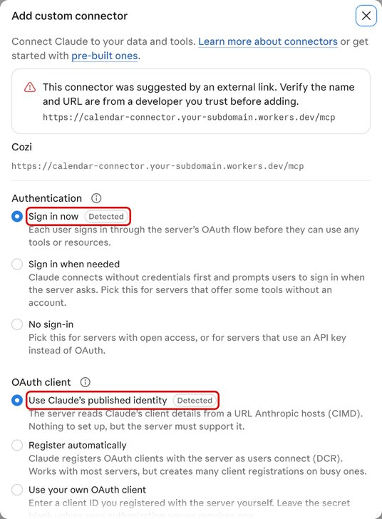
- Scroll down and click Add.
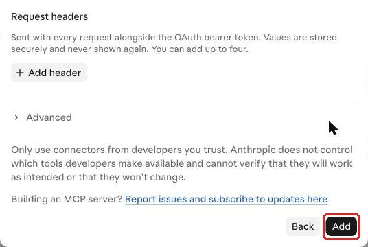
Step 9: Connect and sign in
Click Connect. Your server's sign-in page opens. Enter your Cozi email and password, then click Sign in and connect.
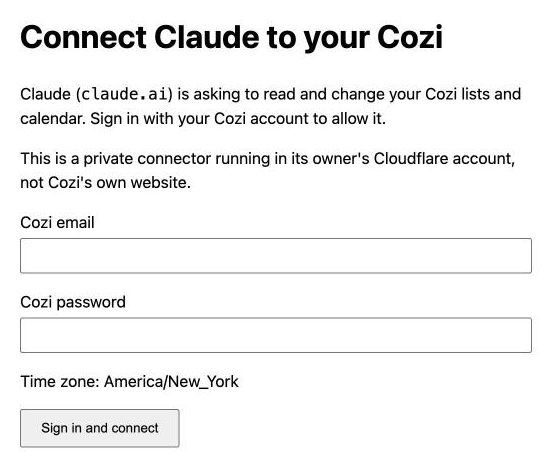
You type the password on your own server, so Claude never sees it. Your server checks it with Cozi, then stores it encrypted so it can log in to Cozi again about once an hour while you use it.
You're done
To try it, ask Claude "What's on my Cozi calendar today?" Claude asks before each tool call by default.
The connector works wherever you use that Claude account, including the phone apps. Claude's Free plan allows one custom connector.
The after-setup page covers family members, read-only access, automatic updates, changing your settings, troubleshooting and removing everything.
Have an AI assistant install it
Paste this into Claude Code, Codex or a similar assistant that can run commands on your computer:
Please install the Cozi connector on my Cloudflare account. It's a small server that lets Claude reach my Cozi calendar and lists: https://github.com/mjucius/cozi_mcp
Run the commands yourself and tell me what you're doing in plain language, because I may not be technical. Stop and ask me if anything unexpected happens. Don't change anything else in my Cloudflare account.
Never ask me to type my Cozi password or a token in this chat. I enter those on my own server's page and in Cloudflare's dashboard.
Run every command below from the folder in step 3, with CLOUDFLARE_ACCOUNT_ID on the same line once step 5 sets it, because settings may not carry between commands. On Windows, use the PowerShell equivalents.
1. Ask whether I have a Cloudflare account. If not, have me create a free one at https://dash.cloudflare.com/sign-up, then continue.
2. Check that Node.js 20 or newer is installed. If it isn't, help me install it.
3. Make a new temporary folder, go into it, and download the setup files:
curl -sL https://codeload.github.com/mjucius/cozi_mcp/tar.gz/refs/heads/main | tar xz --strip-components=3 cozi_mcp-main/deploy/cloudflare
Then run: npm install
4. Run: npx wrangler whoami
If I'm already logged in, ask whether to use that login. If so, skip the login here and the logout in step 11.
Otherwise run: npx wrangler login
Tell me to approve it in the browser window that opens.
5. If more than one account is listed, ask me which one to use, and set CLOUDFLARE_ACCOUNT_ID to that account's ID.
6. Run: npx wrangler deployments list --name calendar-connector
An error saying "This Worker does not exist on your account" [code: 10007] is the good result: the name is free. If a Worker with that name exists, don't overwrite it. Ask me for a different name without "cozi" in it, change the top "name" in wrangler.jsonc (currently "calendar-connector") to it, and run this same check for the new name. For any other error, stop and ask me.
7. Ask me for the email I sign in to Cozi with. Then run: npx wrangler deploy
This also creates one small storage space, which is expected. If it says it can't register a workers.dev subdomain, ask me what name I'd like, have me register it at the link it printed, and run the deploy again. If it registered a subdomain on its own, tell me the name. Note the server address it prints.
8. Set the two settings, using my email from step 7:
printf '%s' "MY_EMAIL" | npx wrangler secret put ALLOWED_EMAIL
printf 'off' | npx wrangler secret put CF_API_TOKEN
9. Run: curl -s -o /dev/null -w '%{http_code}\n' SERVER_ADDRESS
It should print 200, and the visit lets the server learn its own name. If it doesn't, wait a few seconds and try once more, then stop and ask me.
10. Help me turn on automatic updates, unless I say to skip them. Tell me which Cloudflare account I'm using, then:
- Tell me to open https://dash.cloudflare.com/?to=/:account/api-tokens&permissionGroupKeys=%5B%7B%22key%22%3A%22workers_scripts%22%2C%22type%22%3A%22edit%22%7D%5D&name=calendar-connector%20updater and choose that account if asked, leave the form as it is, scroll down, click Review token, then Create token, and copy the token.
- Tell me to open Workers & Pages, then my Worker, then Settings in Cloudflare, click the pencil next to CF_API_TOKEN, click Rotate, paste the token, and click Deploy.
11. Run: npx wrangler logout
Then delete the temporary folder.
12. Tell me my server's address, and that my last step is to open it and follow the steps on that page, signing in with my Cozi email and password.
You'll still need to do a few things yourself:
- Approve Cloudflare's sign-in in your browser.
- Tell the assistant which Cloudflare account to use, if you have more than one, and your Cozi email.
- Create the update token and paste it into your server's settings in Cloudflare, unless you skip updates. Don't paste it into the chat.
- Open your server's page, click Add to Claude, Continue, Add and Connect, and sign in with Cozi. Steps 8 and 9 of the click-through path show those screens.
While it works, the assistant has access to your whole Cloudflare account, so read what it plans to do before you approve it. The assistant logs out of Cloudflare when it's done.
Your server works the same as one set up with the button. The after-setup page covers what comes next.